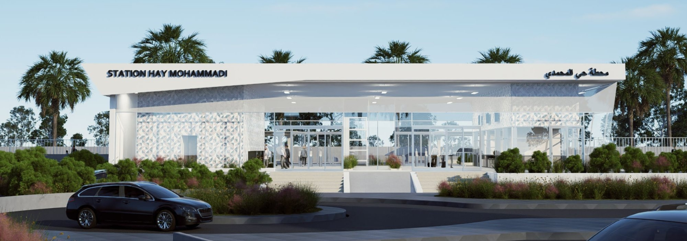
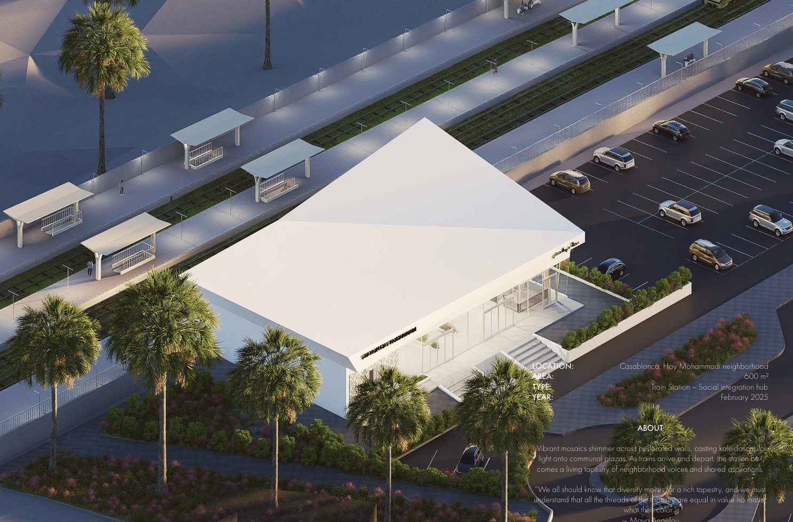
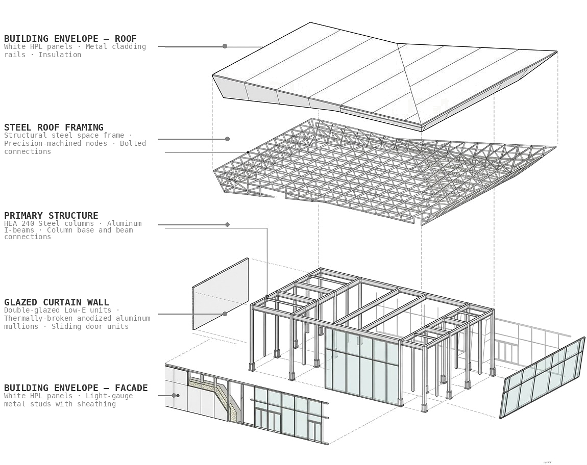
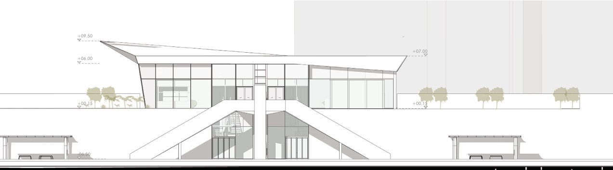

PRO · Infrastructure
Hay Mohammadi Station
A rapid transit station in the Hay Mohammadi district of Casablanca, one of the city's oldest and most densely inhabited popular neighbourhoods. The station is embedded within a complex urban fabric and is designed to act as a civic infrastructure in a double sense: functional as a transport node and spatial as a public threshold for a district that has historically lacked investment in its public realm.
The project resolves a challenging site condition where the rail line runs at grade through a constrained urban corridor, requiring the station building to negotiate between the rail platform level and the existing street network. The covered concourse is designed to extend the street life of the neighbourhood into the station itself, with the canopy structure creating a sheltered public space that is active throughout the day. The project was produced in Revit with full structural and services coordination at Yassir Khalil Studio.
Render — Aerial View

Structural System

Section — Street Facade
